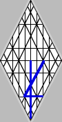

The Crown Diamond and Western Alphabets
|  |
.gif) |
.gif) |
.gif) |
| Sinaitic Hebrew | Early Greek | Uppercase | Lowercase |
The alphabets of Western mankind are inherent to the Crown Diamond grid. From their prototypical appearance in the Phoenician, which is also known as Paleo-Hebrew, as Sinaitic Hebrew, as Proto-Canaanite, and as Ancient Arabic, the characters of the original alefbet might be said to have evolved, from age to age, as inventions resulting from the cultural interactions between peoples. That the Western writing systems share a common source based on the geometry of Creation would argue that the alphabets are as likely to be revelations as inventions.
If they began as stick characters drawn in the mud, the alphabets may have been transformed over time by those who used them. It's also possible that rudimentary examples of stylized alphabets are handwriting samples of a known standard. My handwriting, for example, just barely resembles the letters I learned to draw in school. In either case, I would argue that changes in the alphabets are reflections of spiritual changes within man; for it's doubtful that secret societies of adepts arose, from time to time, to engineer an orderly evolution in ciphers to record thoughts and transactions. It's more likely that, revelation of a better way of writing gave rise to its adepts.
In the Crown Diamond diagram, it is demonstrated that the alphabets of Western man share a common origin in the Tree of Life, which is said to bear twelve manners of fruit, according to its seasons. My view is that, shifting with the ages, the alphabets of man have appeared among its peoples according to the will of Elohim, much as leaves of the Tree: falling away at the conclusion of an age and appearing in subsequent ages in new, but related, configurations.
In their transformations over time, therefore,
I see the hand of
 giving
focus to the revelation of immutable Truth. In the beginning, Phoenician extreme, the alefbet spoke broadly of principles.
Its words rarely denoted any specific thing, and communication was the result of
juggling connotations, which accounts for the magnificent complexity of the lively oracles of Elohim,
as written in the Moses script. To preserve the Oral Tradition of the Sinai
Torah without the luxury of a priesthood dedicated to that end, Ezra began a
shift to specificity that led, ultimately, to the translations of the Masoretes.
giving
focus to the revelation of immutable Truth. In the beginning, Phoenician extreme, the alefbet spoke broadly of principles.
Its words rarely denoted any specific thing, and communication was the result of
juggling connotations, which accounts for the magnificent complexity of the lively oracles of Elohim,
as written in the Moses script. To preserve the Oral Tradition of the Sinai
Torah without the luxury of a priesthood dedicated to that end, Ezra began a
shift to specificity that led, ultimately, to the translations of the Masoretes.
Thanks in no small part to Ezra, we say it's written that HaShem will magnify Torah and make it glorious. The block script fulfills that prophecy in the sense that, as through a magnifying glass, the essence of the Oral Tradition is easier to grasp. However, the Babylonian script-- especially in its most elaborate iterations-- is exclusive, secular: very like the coded ciphers of state craft. The Aramaic takes the key of knowledge out of reach of the nations, making Torah's magnification among the nations more difficult and less glorious, as the fullness of what is written depends not only on interpretation of its letters, but also upon the brand of its letters. This colors HaShem the god of the dot and the tittle, but not of the upper and lowercases.
.gif) |
| The Ogham Script |
.gif) |
| Indo-Arabic Numerals |
Incomparable, the wisdom of Elohim, who has hidden the
branches of the Tree of Life in our daily lives from the time of the first Adam! There is but one Tree: it is our eating that distinguishes the
manner of fruit. When its revelation in our midst is complete
(Gen. 3:24; Rev. 2:7; Luke 17:21), we shall find that we
are accustomed to some of the twelve manner of fruits already
(John 6:53), which
has prepared our intellectual metabolisms for those fruits which have yet to appear to our sensibilities. Truly,
 is an El of Order, and He has founded His troop in the Earth
(Amos 9:6). What a glorious day, when we shall see Him face-to-face
among us, as also face-upon-face within us! Baruch HaShem, in the name of Yahushúa!
is an El of Order, and He has founded His troop in the Earth
(Amos 9:6). What a glorious day, when we shall see Him face-to-face
among us, as also face-upon-face within us! Baruch HaShem, in the name of Yahushúa!
| This presentation traces the letters of the alefbet as they move from the Phoenician to the Latinate languages. Many variants have appeared on Earth during the time the various scripts have been in use, and not all variants are illustrated. Were it possible for this writer, it would yet be impractical and pointless, for example, to locate on the Crown Diamond all the ways individuals form the English letters in this age, let alone all variants from all English periods. As handwriting standards are both known and ignored by some writing English, so have the Ancient Greek and Phoenician standards been both known and ignored in times past. The standards exist, however; and it is by those standards that we recognize the variants, enabling the culture as a whole to read and to understand the work of many different scribes. |
It is not possible to overemphasize the importance of the alphabets to spiritual understanding. The "Logos/Word" of John 1:1 is a direct reference to the alefbet,
referring to the Torah's most prevalent word form,
 , rendered as the Alpha/Omega
of Greek scriptures. The twenty-two characters of the Ancient Hebrew from
/alef to
/taw are
pictograms of the Principles of Elohim, whose image we mirror. There are
now many sources on the web to pursue understanding of Torah's original
alphabet. My name for the language is Paleo.
, rendered as the Alpha/Omega
of Greek scriptures. The twenty-two characters of the Ancient Hebrew from
/alef to
/taw are
pictograms of the Principles of Elohim, whose image we mirror. There are
now many sources on the web to pursue understanding of Torah's original
alphabet. My name for the language is Paleo.
The tables of this
partition fall into two categories. First is the Phoenician, the
Paleo-Hebrew because the alefbet was in use by the patriarchs
and affirmed in its importance by the Angel of
 ,
when Moshe was given Ten Sayings and instructed to see to the pattern
shown to him on Mount Sinai.. Second are the tables of transition,
skirt the Ancient Greek, the Roman capitals, and the lowercase letters
of modern scripts. I call them transitional alphabets because we have
yet to come to a pure language and a pure speech, but we have the sense
that the fulfillment of that saying is very close.
,
when Moshe was given Ten Sayings and instructed to see to the pattern
shown to him on Mount Sinai.. Second are the tables of transition,
skirt the Ancient Greek, the Roman capitals, and the lowercase letters
of modern scripts. I call them transitional alphabets because we have
yet to come to a pure language and a pure speech, but we have the sense
that the fulfillment of that saying is very close.
It isn't within the capability of this writer to set forth the synthesized interpretations of the alphabet that shall appear in the future age: the age is not quite born. It is my belief, however, that these tables will speak to those who shall follow about the direction their studies of language should take.
A most significant resource for learning of the alefbet is the text of Psalm 119. Paleo texts are available. These are not dead letters in a dead language. To the contrary, they are oracular images that speak of the Principles of the great I AM. Have no other focus in your studies; for the five smooth stones of the Paleo-Hebrew Torah comprise the lively oracles of Elohim.
Following the tables illustrating the alphabet are a few pages exploring possible approaches to various characters of the alphabets according to their situations on the Tree of Life. It is written, "every scribe which is instructed unto the kingdom of heaven is like unto a man that is a householder, which bringeth forth out of his treasure things new and old."
Let us not despise the new because it has yet to show the polish that comes with age; likewise, let us not forsake the old simply because new things have appeared and are appearing. If old things seem to pass, it is because their essence has filled the new (Eccl. 1:9-11). HaShem is an El of order, and He does all things well. Praise The Name that, in Him, there is no shadow of changing, and that He has endowed mutability with the potential of attaining comprehension of immutability, unto His glory and our edification. Barak-El.